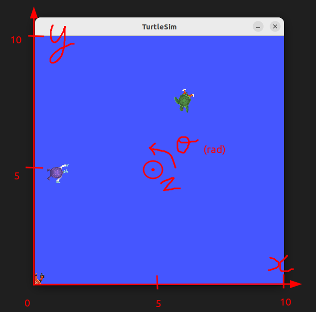

ROS 2 CLI and Turtlesim
1. Introduction
The ros2 command-line interface (CLI) lets you start nodes and inspect or
interact with a running ROS 2 system. Its subcommands cover nodes, topics,
services, actions, parameters, interfaces, and many other ROS 2 concepts.
Turtlesim is a small teaching application that makes these concepts visible.
In this tutorial, you will use the CLI to inspect and control a simulated
turtle. Try to find commands with --help and the ROS 2 basics cheat
sheet before consulting the solutions.
The official ROS 2 Jazzy beginner CLI tutorials provide additional examples.
1.1 Requirements
Install Turtlesim if it is not already available:
sudo apt update
sudo apt install ros-$ROS_DISTRO-turtlesim
Source ROS 2 in every new terminal:
source /opt/ros/$ROS_DISTRO/setup.bash
Display the available CLI subcommands:
ros2 --help
Most commands provide more detailed help:
ros2 topic --help
ros2 topic echo --help
2. ROS 2 communication patterns
ROS 2 uses three principal communication patterns:
Interface |
Pattern |
Typical use |
|---|---|---|
Topic |
Publisher/subscriber |
Continuous streams of data |
Service |
Request/response |
Short operations that return one response |
Action |
Goal/feedback/result |
Longer operations that can provide feedback and be cancelled |
Messages, services, and actions are described by interface definitions. List the installed interfaces and inspect one with:
ros2 interface list
ros2 interface show geometry_msgs/msg/Twist
3. Start Turtlesim
The general form for starting an executable is:
ros2 run PACKAGE EXECUTABLE
Start the simulator in one terminal:
ros2 run turtlesim turtlesim_node
Start keyboard teleoperation in another terminal:
ros2 run turtlesim turtle_teleop_key
A Qt window should open with a blue background and a turtle in the middle. Treat it as an automated guided vehicle observed from above.

You can keep the simulator visible by right-clicking its title bar and enabling Always on top. Select the teleoperation terminal and use the arrow keys to move the turtle. The other listed keys set absolute orientations.
4. Inspect the ROS graph
With both Turtlesim nodes running, use the CLI to discover the nodes, topics, services, actions, parameters, and their interface types.
4.1 Nodes
List the running nodes:
ros2 node list
Inspect the simulator node:
ros2 node info /turtlesim
Node names should be unique within a ROS graph. ROS 2 can start nodes with the same name, but doing so makes introspection and communication ambiguous.
4.2 Topics
List topics and their types:
ros2 topic list -t
Inspect the velocity command topic:
ros2 topic type /turtle1/cmd_vel
ros2 topic info /turtle1/cmd_vel --verbose
ros2 interface show geometry_msgs/msg/Twist
Display messages and measure their publication frequency and bandwidth:
ros2 topic echo /turtle1/pose
ros2 topic hz /turtle1/pose
ros2 topic bw /turtle1/pose
The main Turtlesim topics are:
/turtle1/color_sensorreports the RGB values of the trail color./turtle1/cmd_velreceives commands that move the turtle. Echo this topic while using keyboard teleoperation to observe the velocity commands./turtle1/posereports the turtle’s current position and orientation.
4.3 Services
List services and their types:
ros2 service list -t
Inspect a service type and its request fields:
ros2 service type /spawn
ros2 interface show turtlesim/srv/Spawn
ros2 interface proto turtlesim/srv/Spawn
The main Turtlesim services are:
/killand/spawnremove and create turtles./clearremoves trail lines, while/resetrestores the initial state./turtle1/set_penchanges the trail color and thickness./turtle1/teleport_absoluteand/turtle1/teleport_relativemove the turtle instantly.
The services containing parameter in their names support the node’s
parameter API. You can ignore them until the parameter exercise below.
4.4 Actions
List action servers and inspect the rotate action:
ros2 action list -t
ros2 action info /turtle1/rotate_absolute
ros2 interface show turtlesim/action/RotateAbsolute
Actions are appropriate for operations that take time and may need feedback or cancellation.
4.5 Parameters
List, read, and describe parameters:
ros2 param list
ros2 param get /turtlesim background_r
ros2 param describe /turtlesim background_r
Save all parameters from the node to a YAML file:
ros2 param dump /turtlesim
In the next module, repeat these introspection activities with rqt and
rqt_graph and compare the graphical view with the CLI output.
5. Interact with Turtlesim
5.1 Publish a topic
Stop the keyboard teleoperation node before publishing your own velocity
commands. The Twist message contains two nested Vector3 values named
linear and angular.
Publish a velocity command at 2 Hz:
ros2 topic pub --rate 2 /turtle1/cmd_vel geometry_msgs/msg/Twist \
"{linear: {x: 0.5}, angular: {z: 0.5}}"
Stop a continuous publisher with Ctrl+C. To publish only once, replace
--rate 2 with --once.
5.2 Call services
Service request values use YAML syntax and must match the fields and types in the service interface. First, change the turtle’s pen color:
ros2 service call /turtle1/set_pen turtlesim/srv/SetPen \
"{r: 100, g: 0, b: 0, width: 2, 'off': 0}"
Move the turtle and echo /turtle1/color_sensor to compare its output with the
chosen RGB values.
Inspect and call the empty /clear service:
ros2 service type /clear
ros2 interface show std_srvs/srv/Empty
ros2 service call /clear std_srvs/srv/Empty "{}"
Spawn a second turtle:
ros2 service call /spawn turtlesim/srv/Spawn \
"{x: 1.0, y: 5.0, theta: 0.0, name: second_turtle}"
Remove the second turtle:
ros2 service call /kill turtlesim/srv/Kill \
"{name: second_turtle}"
5.3 Send an action goal
The rotate action accepts an angle in radians. Send a goal and display its feedback:
ros2 action send_goal /turtle1/rotate_absolute \
turtlesim/action/RotateAbsolute "{theta: -1.57}" --feedback
5.4 Change parameters
The background color parameters accept values from 0 to 255. Change one of them:
ros2 param set /turtlesim background_r 125
The parameter services can also be inspected and called directly:
ros2 service type /turtlesim/list_parameters
ros2 interface show rcl_interfaces/srv/ListParameters
ros2 service call /turtlesim/list_parameters \
rcl_interfaces/srv/ListParameters "{prefixes: [], depth: 0}"
6. Next: record and analyze Turtlesim data
Continue with ROS 2 bags and PlotJuggler to record Turtlesim commands and poses, replay the movement, and inspect the recorded signals in PlotJuggler.
7. Remapping and runtime options
ROS-specific arguments follow --ros-args. Rename a node at runtime:
ros2 run turtlesim turtlesim_node --ros-args \
--remap __node:=workshop_turtlesim
Remap the command topic for both Turtlesim nodes:
ros2 run turtlesim turtlesim_node --ros-args \
--remap /turtle1/cmd_vel:=/robot/cmd_vel
In another terminal:
ros2 run turtlesim turtle_teleop_key --ros-args \
--remap /turtle1/cmd_vel:=/robot/cmd_vel
The nodes still communicate because the original topic is mapped to the same new name in both processes.
Every command and subcommand provides options through -h or --help. For
example, --rate 0.5 publishes or calls at 0.5 Hz. When repeatedly calling
/spawn, omit the name field so that Turtlesim can assign unique names.
8. Practice
Use only the CLI and its built-in help to complete these tasks:
Find the names of all running nodes.
Determine the type of
/turtle1/poseand inspect its fields.Measure the publication rate of
/turtle1/pose.Find the request fields of the
/spawnservice and spawn a turtle.Change the pen color, then verify it through
/turtle1/color_sensor.Find the goal, result, and feedback fields of the rotate action, then send a goal.
Change one background-color parameter.
Publish a velocity command at 0.5 Hz.
Call
/resetand observe the result.
Use tab completion, --help, ros2 interface show, and ros2 interface proto
when you are uncertain about a command.
9. Solutions
9.1 Inspect the graph
ros2 node list
ros2 topic list -t
ros2 topic type /turtle1/pose
ros2 interface show turtlesim/msg/Pose
ros2 topic hz /turtle1/pose
ros2 service list -t
ros2 interface show turtlesim/srv/Spawn
ros2 interface proto turtlesim/srv/Spawn
9.2 Interact with the turtle
ros2 service call /spawn turtlesim/srv/Spawn \
"{x: 5.0, y: 5.0, theta: 0.0}"
ros2 service call /turtle1/set_pen turtlesim/srv/SetPen \
"{r: 100, g: 0, b: 0, width: 2, 'off': 0}"
ros2 action send_goal /turtle1/rotate_absolute \
turtlesim/action/RotateAbsolute "{theta: -1.57}" --feedback
ros2 param set /turtlesim background_r 125
ros2 topic pub --rate 0.5 /turtle1/cmd_vel geometry_msgs/msg/Twist \
"{linear: {x: 0.5}, angular: {z: 0.5}}"
ros2 service call /reset std_srvs/srv/Empty "{}"